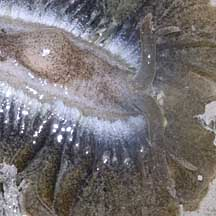
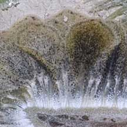
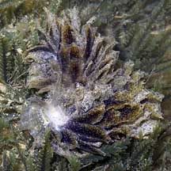
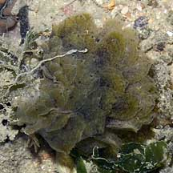

|
|
| sea slugs text index | photo index |
| Phylum Mollusca > Class Gastropoda > sea slugs > Order Sacoglossa |
| Bushy
slug Polybranchia orientalis Family Caliphyllidae updated Jun 2020 Where seen? This slug looks just like a bit of boring seaweed, so it's often overlooked unless you know what to look for. It is sometimes seen on our Northern shores moving among seaweeds at night. This slug was previously called Phyllobranchus or Phyllobranchillus orientalis. Features: 4-5cm. Body with a lot of large leaf-like extensions (called cerata). So it does appear like a tiny bush. The cerata contain fine branching digestive glands. The cerata drop off easily when the animal is handled, and tend to stick to the hand. New cerata grow back in a few days. In addition, a distasteful milky secretion is produced by glands on the edges of the cerata. It has an internal shell, a pair of tentacles (called rhinophores) that are branched. The tentacles are sually hidden by the cerata. What does it eat? Like other sap-sucking slugs, it eats seaweeds. It is believed that the colour of the animal varies with the colour of the seaweed that it last ate. Thus, they may be green, brown or red. They may be transparent if they haven't eaten much. On Cyrene Reef, several individuals were seen nestled in a large clump of Caulerpa racemosa. |
 Out of water, the internal parts can be seen. Changi, May 11 |
 Branched rhinophores. |
 |
|
 Mating? Chek Jawa, Aug 05 |
 Pulau Sekudu, Aug 05 |
| Bushy slugs on Singapore shores |
On wildsingapore
flickr
|
| Other sightings on Singapore shores |
Links
|